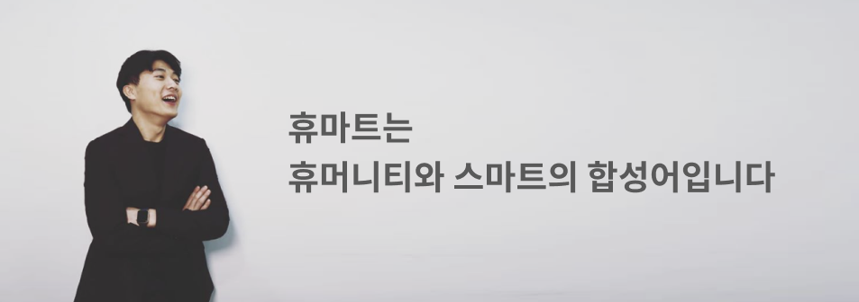
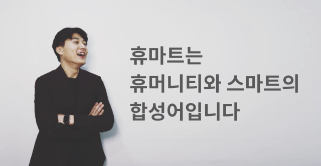

좋은 사람들이 모여 어려운 문제를 풀고, 편리한 서비스로 세상을 더욱 따뜻하게 한다는 순환의 의미를 담고 있습니다. ‘나의 성취가 타인의 삶에 가치가 있는 일’을 하겠다는 개인적
비전을 회사에도 담은 자랑스러운 이름입니다. 혹시 슈퍼 같은거냐고 질문 받을 때면 마음이 참 쓰리지만요.
안녕하세요, 휴마트컴퍼니 대표 김동현입니다. 저는 세상에 큰 영향을 미치고 싶어 컴퓨터공학을 전공했고, 이왕이면 어려운 문제를 해결하고 싶어 사회적 가치에 시선을 두고
살고 있습니다. 이전에 비영리단체를 창업했지만, 지속가능성의 한계를 깊이 경험했습니다. 현재는 영리기업으로서 윤리적 자본주의를 선도하는 회사를 목표로 합니다. 이는 사회적 가치가
담긴 서비스를 공급하여 얻은 이윤으로 또 다른 사회 문제를 해결하겠다는 의미입니다. 제가 생각하는 위대한 기업이란 사회적 가치와 재무적 가치를 동시에 창출하는 기업으로, 임팩트
비지니스 정신으로 현재는 정신건강문제를 풀고 있습니다.
왜 하필 정신건강 문제냐, 하는 질문도 많이 받았습니다. 멘탈이 강해보인다는 인상을 주는 편이라 더 의아해하시는 듯합니다. 저는 문제해결을 좋아하는 사람인데요.
지금보다 더 뾰족뾰족했던 대학생 시절, 개인적으로 추구하는 이상과 현실의 괴리에서 오는 갈등이 컸습니다. 그런 내면의 문제를 정확하고 빠르게 풀려면 전문가를 만나야겠다는 생각을
했습니다. 그 결심 이후 무려 10개월이나 심리상담을 받았고, 인생의 면면에 도움을 크게 받으며 정신건강관리의 중요성을 깨달았습니다. 그런데 저보다 훨씬 더 괴로워하는 친구들에게
아무리 상담 좀 받아보라고 권유해도 아무도 받아들이지를 않았습니다. 그때, 전문가를 찾아간다는 것이 많은 사람들에게 굉장히 어려운 문제라는 것을 알았습니다. 오호 그래? 그럼 이제는
그 문제를 해결해야겠다, 하고 시작한 게 트로스트입니다.
막상 발을 들여놓고 보니, 이 시장 생각보다 만만치 않았습니다. 시간, 거리적 제약, 높은 가격, 기록에 대한 부담감 등 기존 대면상담의 표면적 문제를 해결하는 것만으로는 충분하지
않더라구요. ‘심리상담이 필요한 고객’은 쉽게 상상할 수 있었지만, ‘심리상담에 설득될 고객’은 다른 차원의 문제였습니다. 생각보다 복잡한 고객의 마음, 그 페르소나를 이해하는 데만도
각종 시행착오를 겪었습니다.
그런 시행착오 속에서 정신건강 문제에 대한 사명감이 더욱 깊어졌습니다. 정말 단 한명도, 사연 없는 인생이 없고 아픔 없는 사람이 없습니다. 밀레니얼 세대만 해도 나름
풍요의 시대를 살아온 것 같은데 취업은 어렵고, 맞벌이 부모 밑에서 정서적 충족을 느껴본 적은 없고, 소셜 미디어만 보면 다 나보다 행복한 것 같고.. 불안과 초조, 결핍과 외로움으로
뭉쳐있다가 번아웃이 오거나 극단적 선택을 합니다. 그 아픈 날들에, 그 추운 밤들에 트로스트가 함께하기를 바라면서 열심히 사업하고 있습니다.
정신건강관리란, 삶의 고통을 무시하고 정신승리하자는 말이 아닙니다. 고통과 혼란을 탐색하면서 삶의 의미와 희망을 만드는 과정입니다. 궁극적으로는 스스로와 서로의 불완전성을
‘수용’하는데에 그 의미가 있습니다.
앞으로도 각자의 심리적 방역 수준을 높이고 타인에게 따뜻한 위로와 존중을 건넬 수 있는 사회를 만드는데 기여하는 회사가 될 것입니다.
코로나19 무료 심리상담 추가
지원
트라우마 호소
늘었다”
비대면 심리상담 트로스트 분...
'트로스트', AI 챗봇 런칭
감정 진단 서비스 출시
‘트로스트’,
케이큐브벤처스 등으로부터
5억 투자 유치
“24시간 마음껏 이야기하세요”
심리상담 앱 ‘트로스트’ 만든
청년 CEO